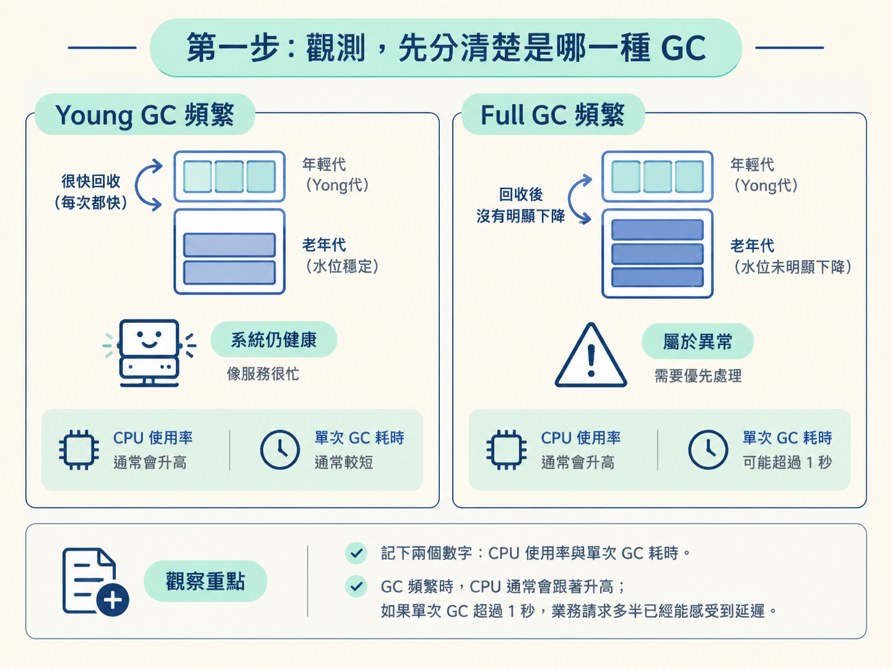
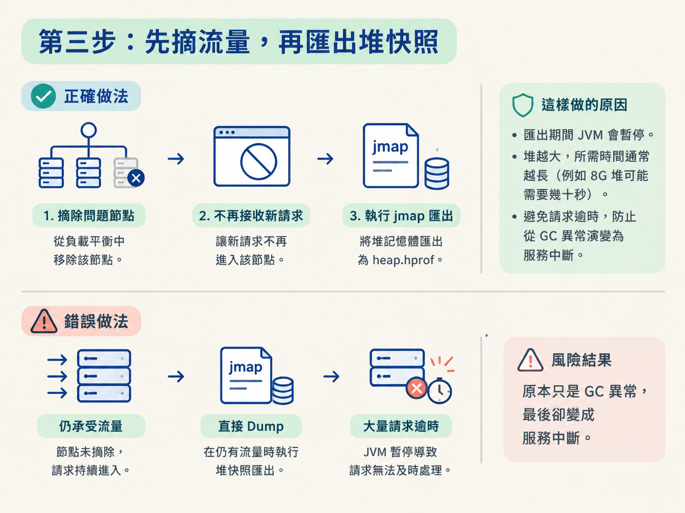

當監控平台跳出「服務 A 的 GC 次數異常」時，重啟服務通常是最直覺的反應。重啟後指標確實可能暫時恢復正常，但同時也把現場證據清掉了。過幾天告警再次出現，你還是不知道問題到底來自程式，還是來自 JVM 配置。
這一課要帶你完成一條可以在線上照著走的排查流程：先從監控確認是哪一種 GC，再用命令列工具觀察記憶體分布；如果確定老年代持續維持高水位，就先隔離流量、保留堆快照，最後用 MAT 離線找出真正占住記憶體的物件。
開始前，你需要先知道 Young GC 與 Full GC 的差別，也要理解為什麼 Full GC 對服務的影響通常更大。整個流程只有一條重要紀律：先確認病情，再決定要不要動刀。
不要一收到告警就重啟。重啟會清掉所有現場證據，根因無法被保留下來，問題也只會週期性復發。
不要讓服務繼續承受流量時直接 Dump 堆記憶體。匯出快照期間 JVM 會暫停，堆越大，暫停時間可能越長，請求也可能因此逾時。正確順序是先從負載平衡摘除這個節點，再進行 Dump。
面對「GC 很頻繁」的告警，第一個問題不是「要怎麼修」，而是「到底是哪一種 GC 在頻繁發生」。兩種情況的嚴重程度不同，處理方向也不一樣。
同時記下兩個數字：CPU 使用率與單次 GC 耗時。GC 頻繁時，CPU 通常會跟著升高；如果單次 GC 超過 1 秒，業務請求多半已經能感受到延遲。這些資訊就是排查時的第一頁病歷。

接著登入伺服器。此時先不要重啟，也不要急著 Dump，先用 jstat 持續觀察各記憶體區域的使用狀況。
jstat -gcutil <pid> 1000其中，<pid> 要替換成 Java 程序的 PID；1000 表示每 1000 毫秒採樣一次。畫面會持續列出各記憶體區域的使用百分比，先看下面三個欄位：
| 欄位 | 觀察重點 | 看到這個現象時怎麼判斷 |
|---|---|---|
| E（Eden） | 使用量變化速度 | 如果掉得特別快，代表物件建立速度很快，先往併發量過高或程式大量建立物件的方向查。 |
| O（Old） | Full GC 後能不能降下來 | 如果長時間維持 90% 以上，Full GC 後仍然降不下來，通常要優先懷疑記憶體洩漏或大物件持續存活。 |
| M（Metaspace） | 是否持續接近滿載 | 如果使用量持續上升並接近上限，代表載入了大量類別，可能與反射或動態代理有關。 |
判斷分支可以這樣走：
如果確認老年代持續偏高，就需要知道「到底是哪一些物件占著記憶體」。這時要匯出整個堆的內容，產生一個堆快照檔。
這一步的順序不能顛倒：
jmap -dump:format=b,file=heap.hprof <pid>匯出期間 JVM 會暫停，堆越大，所需時間通常越長。以 8G 堆為例，可能需要幾十秒。若此時節點仍然承受流量，請求就可能大量逾時，原本只是 GC 異常，最後卻變成服務中斷。

匯出完成後，將 heap.hprof 下載回本機，再把節點重新掛回流量。線上服務恢復後，接下來的分析都可以離線進行，不必繼續對生產環境施加壓力。
用 MAT（Memory Analyzer Tool）開啟 heap.hprof 後，依序檢查三個地方。每一步都在回答不同的問題：有哪些物件很多、誰占用最多、又是誰讓它們一直活著。
String，或某個自訂類別數量異常暴增，這通常是第一條線索。List 可能單獨占用 2G，這時就要追查它為什麼會累積到這麼大。這一步的重點不是只看「哪個類別最多」，而是要繼續追問：「為什麼這些物件還沒有被回收？」只要能找到從 GC Roots 到問題物件的引用鏈，根因才算真正成立。
MAT 分析完成後，結果通常會落在程式問題或 JVM 配置問題。可以用下面的表格整理線索，再回到程式碼與啟動參數逐一驗證。
| 層面 | 常見成因 | 可能出現的現象與後果 |
|---|---|---|
| 程式 | 大物件直接進入老年代 | 超大陣列或百萬筆資料的 List 放不進 Eden，直接晉升到老年代，最後塞滿老年代並觸發 Full GC。 |
| 程式 | 記憶體洩漏 | static Map 只新增、不刪除；ThreadLocal 沒有 remove；或連線沒有關閉。這些物件一直被引用，GC 無法回收，老年代可用空間會逐漸減少，最後可能 OOM。 |
| 程式 | 不必要地建立大量物件 | 在高頻迴圈中反覆建立複雜物件，或誤用 System.gc() 顯式觸發 GC，讓回收頻率增加。 |
| 配置 | 堆記憶體設定過小 | 分配給 JVM 的資源不足，物件一多就必須頻繁回收，GC 指標長期偏高。 |
| 配置 | 新生代設定過小 | Survivor 區域空間不足，物件「過早晉升」到老年代；原本很快會死亡的物件，也被擠進老年代。 |
| 配置 | 元空間不足 | 大量動態代理，例如 Spring、CGLib 產生許多類別，元空間滿載後會觸發 Full GC 清理類別元資料。 |
完成這四步後，你不應該只得到一句「GC 很頻繁」，而應該能回答以下問題：
排查頻繁 GC 時，照著「觀測、隔離、分析、解決」四步走：先從監控分清 Young GC 與 Full GC，再用jstat -gcutil觀察 Eden、Old、Metaspace 的走向；若老年代高水位不降，就先摘除流量，再用jmap匯出堆快照，最後透過 MAT 的直方圖、支配樹與 Path to GC Roots 找出引用鏈。最重要的操作順序是：先確認病情，再動刀；最可能影響服務的 Dump，必須放在摘流量之後。
這套方法不只適用於 GC。遇到執行緒池打滿、MySQL 慢查詢等線上問題時，也可以先觀測現象，再隔離影響，接著保留證據並分析根因。把「先重啟」改成「先查清楚」，才不會每次都只把問題暫時藏起來。